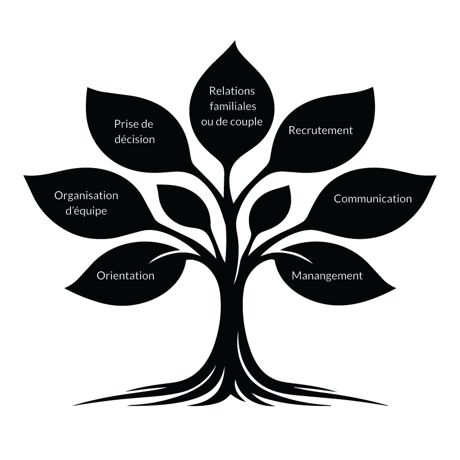

Un point essentiel : comprendre ce que la méthode éclaire,
et ce qu’elle ne fait pas.

La numérologie stratégique apporte un éclairage sur plusieurs dimensions du fonctionnement humain, notamment :
les modes de fonctionnement, les leviers de performance,
les zones de vigilance, la notion de temporalité.
Elle offre un cadre structuré pour réfléchir, prendre du recul et éclairer des situations concrètes, sans jamais se substituer au libre arbitre ni à la responsabilité individuelle.
Elle n’est ni un art divinatoire, ni une pratique ésotérique, ni un outil de prédiction. Il ne s’agit pas de « dire l’avenir », mais d’apporter des clés de compréhension pour mieux se situer, mieux se comprendre, améliorer la communication et prendre des décisions plus justes, dans une démarche professionnelle, rationnelle et centrée sur l’humain.

La méthode s’applique aussi bien à la vie personnelle qu’au monde professionnel.
Elle peut être utilisée dans des contextes variés tels que l’orientation, la prise de décision,
la communication, les relations familiales
ou de couple, le recrutement,le management
et l’organisation d’équipe.
Elle accompagne les particuliers,les dirigeants et les professionnels des ressources humaines dans leurs réflexions stratégiques, en apportant une lecture humaine et structurée des situations rencontrées.

La méthode s’applique aussi bien à la vie personnelle qu’au monde professionnel.
Elle peut être utilisée dans des contextes variés tels que l’orientation,
la prise de décision,
la communication,
les relations familiales ou
de couple, le recrutement,
le management et l’organisation d’équipe.
Elle accompagne les particuliers, les dirigeants et
les professionnels des ressources humaines dans leurs réflexions stratégiques,
en apportant une lecture humaine et structurée
des situations rencontrées.